[计算机网络_自顶向下]:应用层
应用层
一、应用层协议原理
1.网络应用程序体系结构
网络体系结构
网络体系结构是不变的，即因特网五层模型或OSI七层模型
应用程序体系结构
应用程序体系结构主要由应用程序研发者决定，主要包括两大类
- 客户-服务器体系结构
- 对等体系结构(P2P)
客户-服务器体系结构
- 服务器:总是不宕机，服务于许多来自于其他客户机的请求
- 客户:向服务器发送请求的主机
在客户-服务器体系结构中，客户之间互相并不通信
P2P体系结构
- P2P体系结构几乎不依赖于专有服务器
- 应用程序在间断连接的主机之间可以直接通信，这些主机对被称为对等方
2.进程通信
从操作系统的角度，主机间进行通信的的其实是进程而不是程序
客户和服务器进程
在一对进程之间的通话场景中，发起通信的进程被称为 客户,在回话开始时等待联系的进程是服务器
进程与计算机网络之间的接口
套接字
套接字是进程与网络之间发送、接受报文的软件接口，即应用层与传输层之间的接口，也比称之为应用程序与网络之间的应用程序编程接口（API)
进程寻址
发送进程要想发送报文给接受进程，必须得知道接受进程的”所在位置”,这个所在位置通过IP地址和端口号进行标记
- IP地址:一个32位字符串，用来标记每一条主机
- 端口号:端口号是主机上进程的标识符，可以在网络上查到
3.可供应用程序使用的运输服务
可靠数据传输
能够保证进程到进程的数据将会被无差错的传递
最低限度吞吐量
能够保证报文在传输过程中的吞吐量至少不会少于某个值
定时保证
能够保证报文能够以较小的时延进入接受进程
安全性
能够对传输的数据进行加密
4.因特网提供的运输服务
TCP服务
TCP协议提供面向连接服务和可靠数据传输服务
面向连接服务
在数据包开始流动之前，TCP会让客户和服务器之间互相交换运输层控制信息，被称为握手过程
握手阶段结束过后，在发送进程与接收进程之间会建立一条TCP连接,双方可以在这条连接上进项数据报的传递
通信结束过后，会拆除该连接
可靠数据传输服务
安全性
TCP本身并不提供安全性服务,但它的加强版SSL提供了安全服务,这种加强是在应用层上实现的
TCP还提供拥塞控制机制,当发送方与接收方进行网络通信发生网络拥塞时，TCP的拥塞控制机制会抑制发送进程
UDP服务
- 面向无连接服务
- 缺乏可靠性
UDP虽然可靠性不佳，但是它能自由调整发送速率，速率更快
二、Web和HTTP
1.HTTP概况
Web的应用层协议是HTTP(超文本传输协议)
Web页面的构成
- Web页面本质上是一个文档，是由各种对象组成的
- HTML文件，JPEG图形,小程序,视频等都能被称作对象，并且可以通过URL寻址
- 一个页面总是包含一个HTML文件以及各种其他对象
URL的构成
以http://www.someSchool.edu/someDepartment这个URL为例
- www.someSchool.edu是主机名
- /someDepartment是路径
在浏览器中点击超链接会发生什么
- 浏览器向Web服务器发出请求该页面中请求对象的HTTP报文
- 服务器接受到请求并用这些对象的HTTP响应报文进行响应
HTTP是无状态协议
服务器向客户发送被请求的文件，但并不存储任何关于该客户的状态信息
加入客户在短时间内请求了两个对象，服务器并不会因为第一次发送了对象第二次就不做出反应，而是重新再发送一次对象
2.非持续连接与持续连接
非持续连接
客户每发送一个请求，就会单独建立一个TCP连接
持续连接
所有的请求以及响应经过相同的TCP连接发送
对于HTTP而言，既支持非持续连接，也支持持续连接，默认状态下是持续连接
三次握手
当建立TCP连接后，在客户和服务器之间会发生三次握手
- 客户向服务器发送一个小的TCP报文段
- 服务器接受到该报文段后，在用一个小的TCP报文段做出确认和响应
- 客户接收到确认的TCP报文段后，向服务器发送HTTP请求
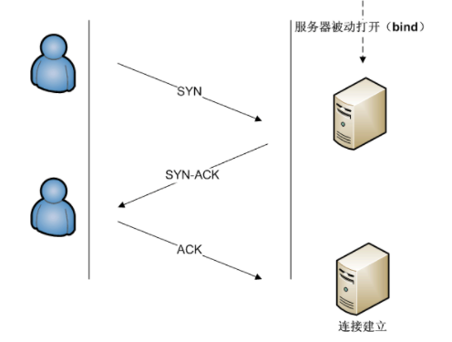
非持续连接的缺点
- 必须为每一个请求的对象建立一个全新的连接，这为Web服务器带来了负担
- 每一个对象的传输都会经历三次握手和自身的传输，相对于持续连接有两倍的往返时延(RTT)
3.HTTP报文格式
HTTP请求报文
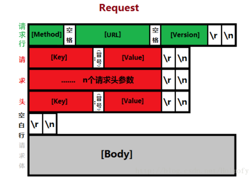
请求行
报文的第一行被称为请求行，包含三个字段，方法字段，URL字段和HTTP版本字段
方法字段
GET
向指定的资源发出“显示”请求,是只读的
HEAD
与GET方法一样，都是向服务器发出指定资源的请求。只不过服务器将不传回资源的文本部分
它的好处在于，使用这个方法可以在不必传输全部内容的情况下，就可以获取其中“关于该资源的信息”（元信息或称元数据）
POST
向指定资源提交数据，请求服务器进行处理（例如提交表单或者上传文件）。数据被包含在请求体中。这个请求可能会创建新的资源或修改现有资源，或二者皆有
注：也可使用GET方法,在包含的URL中加入要输入的数据
PUT
向指定资源位置上传其最新内容。
DELETE
请求服务器删除Request-URI所标识的资源。
TRACE
回显服务器收到的请求，主要用于测试或诊断。
OPTIONS
这个方法可使服务器传回该资源所支持的所有HTTP请求方法。用’*’来代替资源名称，向Web服务器发送OPTIONS请求，可以测试服务器功能是否正常运作。
CONNECT
HTTP/1.1协议中预留给能够将连接改为隧道方式的代理服务器。通常用于SSL加密服务器的链接（经由非加密的HTTP代理服务器）。
方法名称是区分大小写的。当某个请求所针对的资源不支持对应的请求方法的时候，服务器应当返回状态码405（Method Not Allowed），当服务器不认识或者不支持对应的请求方法的时候，应当返回状态码501（Not Implemented）。
HTTP服务器至少应该实现GET和HEAD方法，其他方法都是可选的
HTTP版本
目前的HTTP版本有 HTTP/0.9 HTTP/1.0 HTTP/1.1 HTTP/2
一个经典的HTTP请求报文如图所示，注意每一行都必须以
rn结尾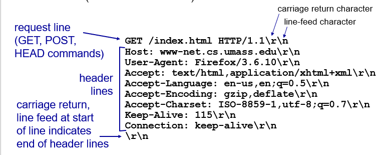
注：可以使用
telnet工具来进行手动报文发送过程
HTTP响应报文
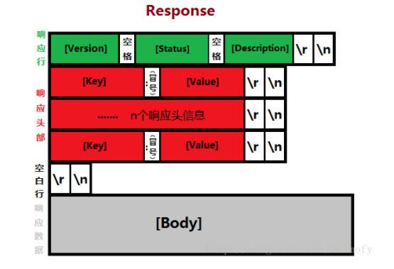
所有HTTP响应的第一行都是状态行，依次是当前HTTP版本号，3位数字组成的状态代码,以及描述状态的短语，彼此由空格分隔
状态代码的第一个数字代表当前响应的类型：
- 1xx消息——请求已被服务器接收，继续处理
- 2xx成功——请求已成功被服务器接收、理解、并接受
- 3xx重定向——需要后续操作才能完成这一请求
- 4xx请求错误——请求含有词法错误或者无法被执行
- 5xx服务器错误——服务器在处理某个正确请求时发生错误
响应报文例子：
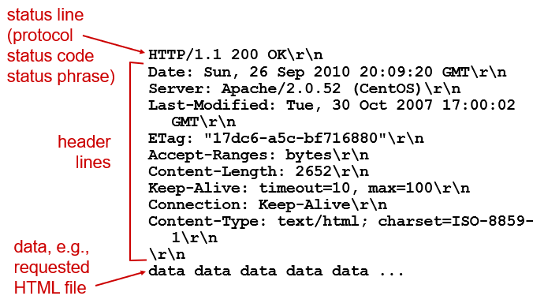
4.cookie
cookie是什么
cookie是一种小型文本文件”，指某些网站为了辨别用户身份而储存在用户本地终端（Client Side）上的数据
为什么需要cookie
HTTP服务器是无状态协议，无法保存用户的数据，但是Web网站通常希望能够识别用户的身份，因此他们使用Cookie来绕开HTTP的这种无状态协议
Cookie的使用
Cookie有四个组件
- HTTP响应报文中有一个Cookie首部行
- HTTP请求报文中有一个Cookie首部行
- 用户端系统总有一个Cookie组件，并且由浏览器进行管理
- Web站点的后端数据库中存储了记录用户身份的Cookie
Cookie的使用过程
当用户第一次访问某个Web站点时，该Web站点会在响应报文中的首部行中添加一行
Set-cookie:xxxx,浏览器接收到响应报文，并读取到这一行时，会在它的cookie文件中添加该Web网站的信息，包含服务器的主机名和该用户的识别码
当用户再一次访问该站点时，浏览器会在请求报文中的是首部行加入cookie: xxxx,此时该Web站点会根据该识别码读取记录在它的后端数据库中的用户信息，此时用户就不用再次验证自己的身份
下面是我的chrome浏览器中保存的cookie
- cookie
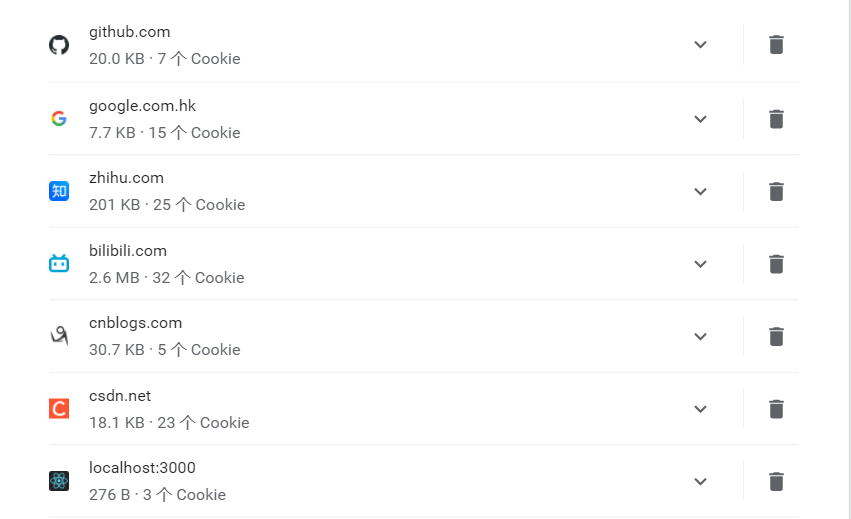
使用cookie的报文发送过程
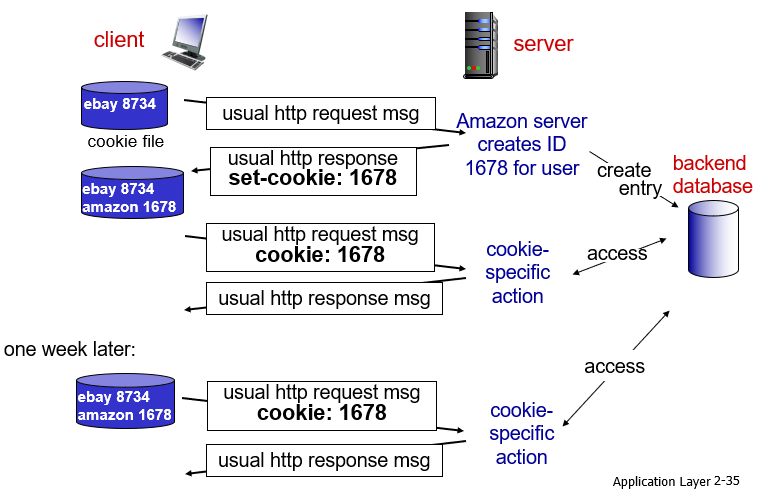
5.Web缓存
什么是Web缓存
- Web缓存是一种临时存储Web文档以减少服务器延迟的一种技术
- Web缓存器，也叫作代理服务器(proxy server)，可以保存最近请求过的对象的副本
Web的使用过程
- 用户在浏览器上点击一个超链接
- 浏览器创建一个到Web缓存器的TCP连接，并向Web缓存器的对象发送一个HTTP请求
- Web缓存器进行检查，看本地是否存储了该对象的副本，如果有，则Web缓存器用HTTP响应报文返回该对象
- 如果没有，他就打开一个与对象的初始服务器的TCP连接，向该服务器发送HTTP请求报文，服务器接受到请求报文后，向该Web缓存器发送一份响应报文
- Web缓存器接收到对象后，在本地存储空间存储一份副本，并向客户的浏览器发送该副本
从某种意义来说，Web缓存器既是客户也是服务器，它可以大大减少客户请求的响应时间
图示
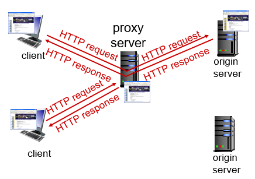
6.条件GET方法
条件GET方法的作用
由于Web缓存器中的对象可能是陈旧的，即服务器中的Web文档已经被修改，使用条件GET方法可以证实Web缓存器中的对象是最新的
条件GET请求报文
一个请求报文满足以下条件时就被称为条件请求报文
- 请求报文使用GET方法
- 请求报文中包含一个
If-Modified-Since: xxxx
条件请求报文的使用
- 当Web缓存器在本地缓存对象的时候，他也在本地缓存了最后的修改时期
- 下一次用户再次访问该Web页面的时候，该Web缓存器会向服务器发送条件请求报文
- 如果该Web页面在条件请求报文
if-Modified-Since:xxxx所表示日期后没有发生修改，则Web服务器只会向Web缓存器发送一个不包含对象的响应报文
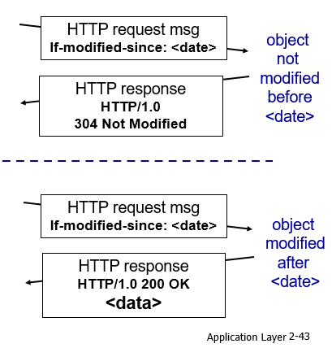
三、因特网中的电子邮件
电子邮件的组成部分
电子邮件通信主要由三大部分组成：
- 用户代理
- 邮件服务器
- 邮件协议
一、用户代理 (user agents)
就像我们常常使用的邮箱客户端，我们能直接接触的部分
- 允许用户阅读,回复,转发,保存,编辑邮件消息
- 例如:Outlook, foxmail等
- 发送, 接收邮件消息到/从服务器
- 运行邮件协议
二、邮件服务器 mail servers
- 邮箱mailbox 存放用户接收的邮件消息
- 外出报文队列outgoing message queue
- 运行邮件协议
三、邮件协议
- 简单邮件传输协议
- 邮件接受协议
一、SMTP简单邮件传输协议
SMTP是因特网电子邮件中主要的应用层协议
客户使用TCP来可靠传输邮件消息到服务器
端口号
25直接传送: 发送服务器到接收服务器
传输的3个阶段
- 握手 (问候)
- 邮件消息的传输
- 结束
命令/应答的交互
– 命令: ASCII文本格式– 应答: 状态码及其短语
邮件消息必须是7-bit ASCII
例子:
- Alice使用用户代理编写邮件消息(给bob@someschool.edu的)
- Alice的用户代理发送邮件消息 到她的邮件服务器;邮件消息存放在邮件消息队列
Alice邮件服务器的SMTP客户端发起建立一个到Bob的邮件服务器的SMTP服务器端的TCP连接,经过应用层握手
注：
- 如果此时Bob的邮件服务器没有开机，那么Alice的邮件服务器会在稍后继续进行尝试
- Alice的邮件服务器和Bob的与邮件服务器总是直接连接，他们不使用中间邮件服务器
- SMTP客户在这个TCP连接上发送Alice的邮件消息
- Bob服务器存放邮件消息存到 Bob的邮箱
- Bob调用他的用户代理读邮件消息
下面是一个使用telnet发送邮件的例子
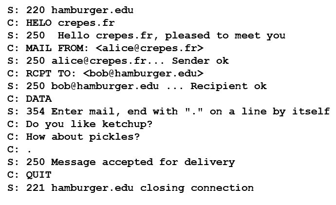
SMTP总结
- SMTP使用持续连接
- SMTP 要求邮件消息 (header & body)必须 是7-bit ASCII
- SMTP服务器使用 CRLF.CRLF (rn.rn)来判断邮件消息的结束
二、与HTTP对比
HTTP是服务器向Web客户传送报文
SMTP是邮件服务器向另一个邮件服务器传送报文
HTTP是拉协议
在服务器开机的时候，用户使用HTTP从Web服务器上拉取信息,TCP是由想连接文件发起的
SMTP是推协议
发送邮件服务器使用SMTP把文件推向接收文件服务器,TCP连接是由要发送文件的机器发起的
HTTP把每个对象封装到它自己的响应报文中
SMTP把所有对象都放到一个响应报文中
三、邮件报文格式
首部行
To:
From:
Subject:
…
首部必须包含From和To,其他的首部行则是可选的
分隔符
使用回车换行==CRLF==将首部行与body分割
报文体
使用ASCII码格式
四、邮件访问协议
- 邮件接收方通过POP3(第三版邮局协议)、IMAP(因特网邮件访问协议)、HTTP等协议将邮件从自身的邮件服务器拉取到自己的主机上
POP3
当用户代理打开了一个到邮件服务器端口110上的TCP连接后，POP3协议开始发挥作用
POP3按照三个阶段发挥作用:
授权(authorization)
用户代理以明文形式向服务器发送用户名(user)以及口令(pass)用来鉴别自身身份
事务处理
用户取得报文(retr)，同时还能进行以下操作
- 对报文做删除标记(dele)
- 取消删除标记
- 获取邮件数量以及各自大小(list)
更新
使用quit指令，POP3对话将会结束，邮件服务器将会是删除那些被标记为删除的报文
IMAP
POP3在服务器上不能为用户创建任何远程文件夹
IMAP服务器会把报文和每一个文件夹联系起来，当报文第一次到达服务器时，会被存放到收件人的INBOX文件夹中，
收件人则能够把邮件移动到一个新的文件夹中(邮件服务器上)，用户能够对邮件进行删除，阅读等操作, IMAP提供了这些命令
IMAP还能允许用户代理获取报文的某些部分，比如首部行
HTTP
当使用Web进行邮件的接受时，用户代理就是普通的浏览器，用户与远程服务之间通过HTTP协议进行通信
四、DNS
什么是DNS
DNS(Domain Name System,域名系统)有两重身份
- 一个由分层的DNS服务器实现的DNS数据库
- 一个使得主机能够查询分布式数据库的应用层协议
DNS运行在UDP之上，使用53号端口
域名与IP地址
以www.baidu.com为例，baidu.com就是域名,它的IP地址为 220.181.38.148
域名是面向用户的，具有可读性，IP地址是面向网络的，具有规范性
1.DNS提供的服务
DNS被其他应用层协议，包括HTTP,STMP,FTP等所使用，将用户提供的主机名(域名)解析为IP地址
主机别名
一台主机只有一个规范主机名，但它可能有多个别名，应用程序可以调用DNS来取得主机别名对应的规范主机名，以及IP地址
邮件服务器别名
邮件服务器也可以使用别名，甚至一个公共邮件服务器的别名可以和Web服务器使用相同的别名，应用程序可以调用DNS来取得主机别名对应的规范主机名，以及IP地址
负载分配
一个站点(如cnn.com)可以被分布在多台服务器上，一台服务器也可以运行在多台端系统上，因此，一个IP地址集合可以与同一个规范主机名相联系,DNS数据库存储这这些IP地址集合
每次用户总是向IP地址排在第一个的服务器发送HTTP请求报文，DNS在每次回答中都会循环这些地址次序，以此做到循环分配负载
2.DNS工作机理
域名的分级
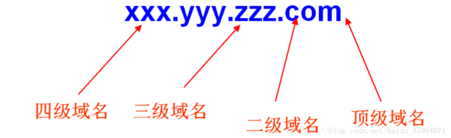
分布式、层次数据库
- DNS使用了大量的DNS服务器，以层次的方式在全世界的范围内进行组织
| 分类 | 作用 |
|---|---|
| 根域名服务器 | 最高层次的域名服务器，本地域名服务器解析不了的域名就会向其求助 |
| 顶级域名服务器 | 负责管理在该顶级域名服务器下注册的二级域名 |
| 权威域名服务器 | 负责一个区的域名解析工作 |
| 本地域名服务器 | 当一个主机发出DNS查询请求时，这个查询请求首先发给本地域名服务器 |
域名的解析流程
域名解析总体可分为以下过程：
(1)输入域名后, 先查找自己主机对应的域名服务器，域名服务器先查找自己的数据库中的数据.
(2) 如果没有， 就向上级域名服务器进行查找， 依次类推
(3) 最多回溯到根域名服务器, 肯定能找到这个域名的IP地址
(4) 域名服务器自身也会进行一些缓存， 把曾经访问过的域名和对应的IP地址缓存起来, 可以加速查找过程
具体可描述如下：
- 主机先向本地域名服务器进行递归查询
- 本地域名服务器采用迭代查询，向一个根域名服务器进行查询
- 根域名服务器根据域名的顶级域名部分，告诉本地域名服务器，下一次应该查询的顶级域名服务器的IP地址
- 本地域名服务器向顶级域名服务器进行查询
- 顶级域名服务器告诉本地域名服务器，下一步查询权威服务器的IP地址
- 本地域名服务器向权威服务器进行查询
- 权威服务器告诉本地域名服务器所查询的主机的IP地址
- 本地域名服务器最后把查询结果告诉主机
如图所示：
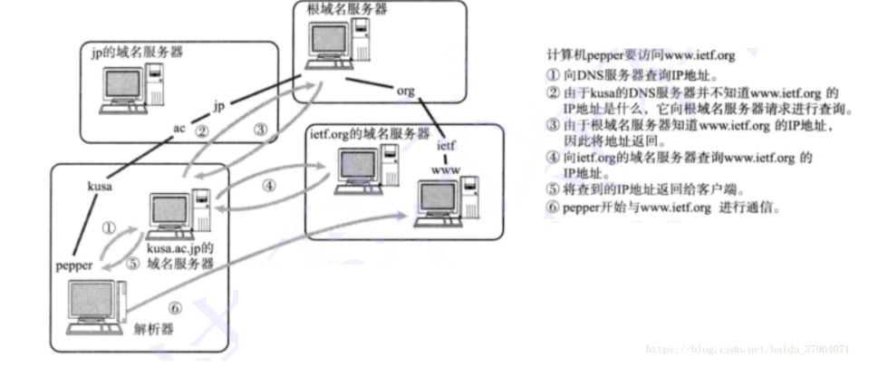
递归查询与迭代查询
递归查询
本机向本地域名服务器发出一次查询请求，就静待最终的结果，这次查询被称为递归查询。如果本地域名服务器无法解析，自己会以DNS客户机的身份向其它域名服务器查询，直到得到最终的IP地址告诉本机
迭代查询
本地域名服务器向根域名服务器查询，根域名服务器告诉它下一步到哪里去查询，然后它再去查，每次它都是以客户机的身份去各个服务器查询，本地域名服务器进行的三次查询被称为迭代查询
DNS缓存
DNS缓存可以改善时延性能并减少在因特网上到处传播的DNS报文
工作机理
当服务器接收到另外一台主机发送的响应报文(包含域名到IP地址的映射)后，会将该映射保存在缓存中，下一次当查询相同域名的请求报文发送到该主机时，可以直接从缓存中拿出并发送
DNS服务器一般会在两天后丢弃缓存信息
3.DNS记录和报文
所有的DNS服务器中都存储了资源记录RR(Resource Record)
RR的内容
RR是一个包含了四个字段的四元组:==(Name,Value,Type,TTL)==
- TTL是该记录的生存时间，它记录了资源记录应当从缓存中删除的时间
下面详细介绍Name,Value和Type
- Type=A,则Name是主机名，Value是该主机名对应的IP地址
- Type=NS,则Name是域，Value是该域对应的权威DNS服务器的主机名
- Type=CNAME,则Value是别名为Name的服务器的规范主机名
- Type=MX，则Value是个别名为Name的邮件服务器的规范主机名
DNS报文
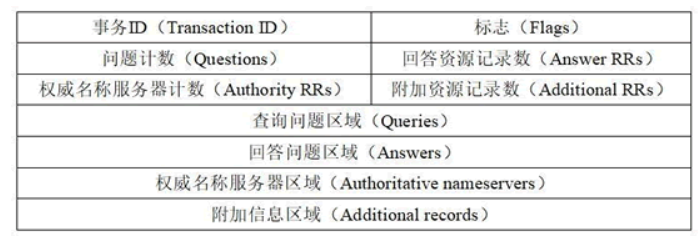
DNS的查询报文与响应报文格式相同，均为上表所示
前12个字节是首部区域，包含6个字段
事务ID，也称标识符，用来标记该查询，该标识符会被复制到响应报文中，以便让客户能够匹配它接收到的和请求的回答
标志
常见的标志如下:
查询/回答标志(0/1)
指出该报文是查询还是回答
“权威的”标志
当该报文是权威DNS服务器的响应报文时，应该在首部行加上”权威的”标志
“希望递归”标志
表明客户希望对该域名进行递归查询
“递归可用”标志
如果递归服务器支持递归查询，会加上”递归可用”标志
另外四个字段记录了另外最后四个字段的RR数目
查询问题区域
包含Name字段和Type字段，用来表明需查询的信息
回答问题区域
包含了回答的信息，即RR
由于一个服务器可能对应多个IP，所以回答字段可以包含多个RR
权威区域
包含了其他权威服务器的信息
附加区域
如果回答区域有一条RR记录了服务器的规范主机名，则在附加区域会补充一条类型A记录
下面是一个wireshark抓包的例子
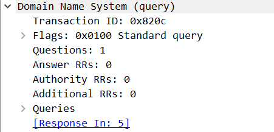
在域名数据库中插入记录
如今购买域名以及设置DNS已经十分简单，下面是我在腾讯云设置DNS解析的例子
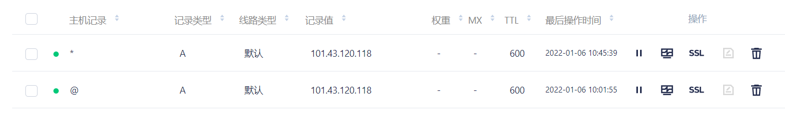
主机记录: RR中的Name字段
www: 解析后的域名为
www.liver0377.xyz@: 直接解析主域名, 如liver0377.xyz
: 泛解析，匹配所有域名, 如.liver0377.xyz
记录类型： 就是RR中的type字段
拒绝攻击服务(DDoS):
攻击者对DNS服务器发送大量分组，导致大多数合法DNS请求得不到回答
五、P2P
P2P协议(peer to peer), 与客户-服务器体系不同，资源被分散存储在网络的各个用户上，每个用户既是下载者，也是上传者
- P2P与C/S体系的分发时间对比
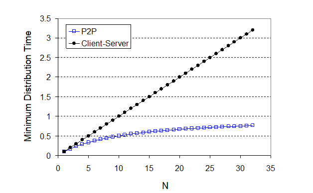
最流行的协议是BitTorrent， 可以看看这篇科普博客(https://zhuanlan.zhihu.com/p/87327257)
六、CDN
对如youtube之类的因特网视频公司，提供视频服务最直接的方法是建立单一大规模数据中心，但是这种方法有三个缺点
- 如果客户远离数据中心，时延就会很大
- 流行的视频可能会在相同的通信链路上发送很多次，这会浪费网络带宽，同时也会使得公司向ISP服务商提供更高的费用
- 如果中心节点故障，将会造成整个链路崩溃
CDN
如今大多数公司使用内容分发网(Content Distribution Network, CDN), CDN的基本策略就是在世界各地建立服务器集群，当用户发出请求时，会自动将其定向到一个提供最好用户体验的CDN服务器集群
分类
CDN分为私有与第三方两类，私有即内容提供商私人拥有，如google就拥有很多自己的私人数据中心, 第三方CDN则可以代表多个内容提供商分发内容
1. 服务器安置策略
CDN通常有两种不同的服务器安置策略
深入
在遍及全球的接入ISP部署服务器集群来深入到ISP的接入网当中，这样做可以更加靠近用户，但缺点是需要很多集群，会带来管理不便
邀请做客
在少量关键位置建造大集群来邀请客户到ISP做客，通常是在因特网交换点(IXP)， 这是如今普遍使用的方式
注: ISP <==> IXP <==> CDN服务器
实现
当用户向服务器发送请求时，CDN通常会截取请求，并:
- 确定此时适合该用户的CDN集群
- 将用户的请求重定向到适合于该用户的CDN服务器集群
通常，CDN会与DNS提供商进行合作，来进行用户请求的截获与重定向
例子
用户访问
NetCiema的Web网页当用户点击视频链接
http://video.netcinema.com/XXXXXX时，用户主机发送了一个对于video.netcinema.com的DNS请求用户的本地DNS服务器(LDNS)将该DNS请求中继到一台用于NetCinema的权威DNS服务器
NetCinema权威DNS服务器向LDNS返回一个KingCDN域的主机名，而不是IP地址，如a1105.kingcdn.com
DNS请求进入KingCDN专用DNS基础设施，LDNS发送对a1101.kingcdn.com的DNS请求
KingCDN的DNS请求进行重定向操作，返回需要的KingCDN内容服务器的IP地址
LDNS向用户主机转发IP地址
用户主机与指定IP地址的主机创建TCP连接，获取到内容
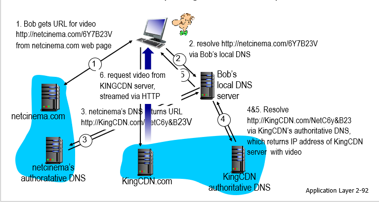
2. 集群选择策略
- 地理位置最接近
- 实时测量时延
本博客所有文章除特别声明外，均采用 CC BY-SA 4.0 协议 ，转载请注明出处！